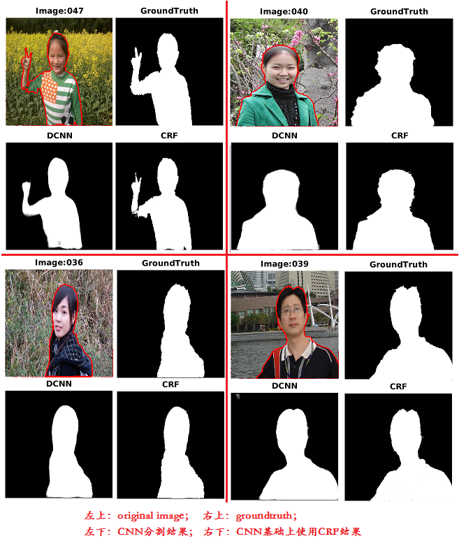
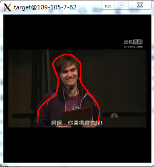

说好的要笔耕不缀，这开始一边实习一边找工作，还摊上了自己的一点私事困扰，这几个月的东西都没来得及总结一下。这就来记录一下关于CNN、Caffe、Image Sematic Segmentation相关的工作，由于公司技术保密的问题，很多东西没办法和大家详说只能抱歉了。在5月份前，我也是一个DL和CNN的门外汉，自己试着看tutorials、papers、搭Caffe平台、测试CNN Net，现在至少也能改改Caffe源码（Add/Modify Layer）、基于Caffe写个Demo。这里希望把学习的过程分享给那些在门口徘徊的朋友。没法事无巨细，但希望能起到提点的作用！
UFLDL： http://deeplearning.stanford.edu/tutorial/
这是stanford Ng老师的教材，也刚好是以CNN为主，Ng老师教材的特色就是简洁明白。一遍看不懂多看两遍，直到烂熟于心，顺便把里面的Matlab Exercises完成了。
http://deeplearning.net/tutorial/
PRML作者给的python入门DL的tutorial，基于Theano Framework，有些偏向于RNN的东西。
一句简单的话描述：“深度学习就是多层的神经网络”。神经网络几十年前就有了，而且证明了“2层（1个隐层）的神经网络可以逼近任意的非线性映射”，意思就是说，只要我的参数能训练好，2层神经网络就能完成任意的分类问题（分类问题就是将不同类通过非线性映射划分到不同的子空间）。但2层神经网络存在的问题是：
如果要逼近非常非常复杂的非线性映射，网络的权值W就会很多，造成Train时候容易出现的问题就是Overfitting。所以大事化小，将复杂问题进行分割，用多层网络来逼近负责的非线性映射，这样每层的参数就少了。自然而然的网络就从2层变成了多层，浅网络(shallow)就变成了深网络(deep)。
但科研界的大牛们会这么傻吗，十几年前会想不到用多层网络来进行非线性映射？看看CNN最早的工作： http://yann.lecun.com/exdb/publis/pdf/lecun-98.pdf 那是98年的，Train了一个5层的CNN来进行MINIST数据集的数字图片分类。多层神经网络一直不火我觉得有这么两个原因：
DL只是一个概念而已。对于做图像和视觉的就该一头扎到CNN(Convolutional Neural Netwok)，做自然语言的就该投入到RNN(Recurrent Neural Network)。我是做图像的。CNN的学习资料除了上面Ng的tutorial外，还有一个Stanford Li Fei-Fei教授的课程cs231：Convolutional Neural Networks for Visual Recognition，http://cs231n.github.io/convolutional-networks/ 是Notes中一份关于CNN非常详细的资料。
先看看这个热个身：贾扬清：希望Caffe成为深度学习领域的Hadoop，增加点学习的欲望，毕竟现在多少人靠着Hadoop那玩意儿挣着大钱。
接着请认准Caffe官方文档： http://caffe.berkeleyvision.org/ 和Github源码： https://github.com/BVLC/caffe 。毫不犹豫fork一份到自己的Github。然后就是照着INSTALL来Complie和Config Caffe了，值得注意的是，安装OpenCV的时候推荐使用源码安装。
先自己熟悉Caffe的架构，主要参考资料就是官网文档，我自己刚开始的时候也写了个小的ppt笔记：Diving into Caffe.pptx
接着就是实实在在地分析一个CNN，比如LeNet、AlexNet，自己在纸上画一画，下面那样
LeNet
AlexNet
当去搜索ICRL、CVPR、ICCV这些最前沿的计算机视觉、机器学习会议的时候，只要是涉及图像相关的深度学习实验，大都是基于Caffe来做的。所以，只要抓住1~2篇popular的paper深入，把论文中的CNN在Caffe上复现了，就能找到一些感觉了。在这期间，下面一些论文是至少要读的：
具体到用CNN做Sematic Segmentation，利用到全卷积网络，对下面两篇进行了精读，并且都Caffe上复现过并用于分割任务，
下面是几个月前我看过这两篇paper后做得ppt：
caffe.proto
Convolution Layer
SoftmaxLossLayer
DataLayer
自己实现个IoULayer
Caffe提供了好用的接口，包括matlab、C++、Python！由于特殊原因，我不能公开我C++和matlab的Demo源码以及其中的一些后处理技术，暂且只能给大家看一些分割的结果：
 
还有一个视频语义分割的结果，大家看看，热闹热闹就好，
我一开始以为看看各层Layer的输出，能帮助我改进Net，可却发现错了，除了前几层还能看出点明亮或边缘信息外，网络后端Layer的输出压根就没办法理解。extract_featmat.cpp是我基于extract_features.cpp改的一个Caffe tool，放到tools目录下编译就好了，使用方法看help：
void print_help(void) {
LOG(ERROR)<<
"This program takes in a trained network and an input image, and then\n"
" extract features of the input data produced by the net.\n"
"Usage: extract_featmat [options]\n"
" -model [pretrained_net_param]\n"
" -proto [feature_extraction_proto_file]\n"
" -img [rgb_image_name]\n"
" -blobs [extract_feature_blob_name1[,name2,...]],refrence .prototxt with"
" \"blob:\". [all] for all layers. \n"
" -wr_prefix [output_feat_prefix1[,prefix2,...]], conrespond to -blobs\n"
" -wr_root [output_feat_dir], optional, default \"./\", make sure it exist\n"
" -gpu [gpu_id],optional,if not specified,default CPU\n";
}下面图是一些Layer的输出blob，从结果可以看出，前面的layer还能看到一些边缘信息，后面的layer就完全看不出原图像相关的信息了，
浅层Layer1
浅层Layer2
浅层Layer3
深层Layer
虽然还是个新手，关于搭建CNN，还在慢慢在找感觉。我觉得从两方面：
利用已有的网络，使劲浑身解数找它们的缺点，改进它们
熟读Googlenet和VGGnet那两篇paper，两者的CNN结构如下：
GoogleNet
VGGNet
VGG不是Weight Filter不是非常厚么，卷积操作复杂度就高。而Googlenet通过Inception中1x1的Convolution刚好是为了减少Weight Filter的厚度，我最近一段时间在尝试做的事就是将VGG中的Layer用Googlenet中的Inception的方式去替代，希望至少在时间上有所改进。
从头搭建一个CNN用于解决实际问题。一个词：搭积木。
先搭一个简单的，比如说就3层：卷积-Pooling-卷积-Pooling-卷积-Pooling，先把这个简单的网络训练以来，效果不好没关系，我们接着往上加，直到满意为止。但是这里面有一个finetune的技巧，那就是用浅层的网络训练weight结果去初始化或finetune深层网络。这也是为什么不直接一开始就搭建深层网络的原因，级别1里就说过，深度网络的Train是个非凸问题，是个至今难解决的大问题，网络初始化对其收敛结果影响很大，finetune就这样作为Deep Network中一项重要的tricks而存在了。 finetune除了由浅至深逐级初始化帮助收敛外，还有一个作用：将自己的网络在一个非常非常大的数据集上(现在最大的ImageNet)进行Train，这个Train的结果再拿去作为实际要解决的问题中用于初始化，这样能增加网络的泛化能力。 然而，当Net遇到问题时，如何去改进？这是个大问题，不说现在没太多经验，有也是盲人摸象的感觉，暂且搁下不提，待后期多做实验分析整理，希望能有所收获。
就我现在的水平，最多也就修炼到这一级了。这一级还要多花功夫，读paper，多思考，继续练。。。
呃，这个实在还没开始着手去做，但迟早是要做的，说了“大数据是燃料，GPU是引擎”的，怎么能不懂引擎呢……
注：由于“实习上班+实验室+论文+刷leetcode+私事”占用时间的关系，好不容易抽出一个上午+一个晚上整理了一下，暂时想到这么多，算列个提纲吧，文章中不少具体细节有机会再补充。